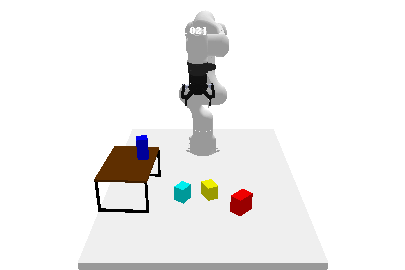
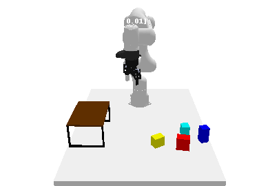
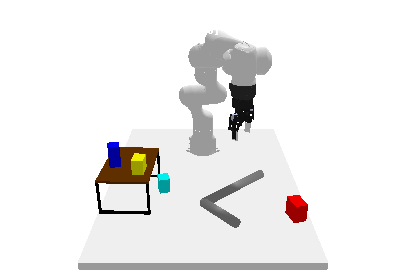
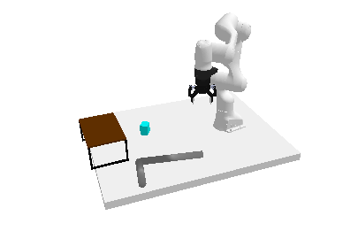
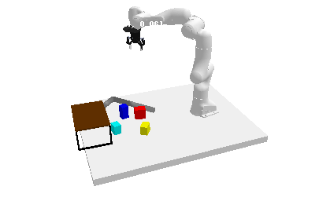
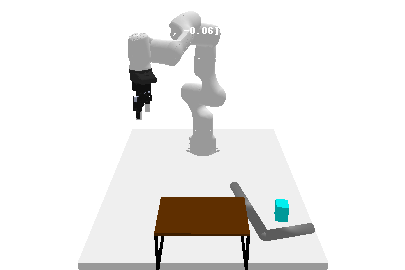

     
Long-horizon tasks, usually characterized by complex subtask dependencies, present a significant challenge in manipulation planning. Skill chaining is a practical approach to solving unseen tasks by combining learned skill priors. However, such methods are myopic if sequenced greedily and face scalability issues with search-based planning strategy. To address these challenges, we introduce Generative Skill Chaining (GSC), a probabilistic framework that learns skill-centric diffusion models and composes their learned distributions to generate long-horizon plans during inference. GSC samples from all skill models in parallel to efficiently solve unseen tasks while enforcing geometric constraints. We evaluate the method on various long-horizon tasks and demonstrate its capability in reasoning about action dependencies, constraint handling, and generalization, along with its ability to replan in the face of perturbations. We show results in simulation and on real robot to validate the efficiency and scalability of GSC, highlighting its potential for advancing long-horizon task planning.
GSC is a diffusion model-based generative and compositional framework that allows direct sampling of valid skill chains given a plan skeleton. Key to our method is skill-level probabilistic generative models that capture the joint distribution of precondition - skill parameter - effect of each skill. To successfully execute a skill, the state must satisfy the precondition of the skill. We train individual diffusion models for each skill to capture this distribution.
Once the skill-level distributions are captured, sampling a valid skill chain boils down to, for each skill in a plan, conditionally generating skill parameters and post-condition states that satisfy the pre-condition of the next skill, constrained by the starting state and the final goal. The critical technical challenge is to ensure that the sequence of skill parameters is achievable from the initial state (forward flow) to satisfy the long-horizon goal (backward flow) and account for additional constraints. We leverage the continuity impose by overlapping states between skills to ensure that such states ensure skill affordability for the subsequent skill and reachability (or feasibility of transition) from the state before. This phenomenon is applied while sampling parallelly from all skill-centric factored distributions to solve task-level planning as shown below.
To solve our objective of finding a sequence of suitable skill transitions which satisfies a given skeleton of skills \(\Phi\), an auto-regressive approach primarily used in prior works follows: \[ p_\Phi(\textbf{s}^{(0:2)}, \textbf{a}^{(0:1)}| \textbf{s}^{(0)}) \equiv P_{\pi_1}(\textbf{a}^{(0)}|\textbf{s}^{(0)})\;\; T_{\pi_1}(\textbf{s}^{(1)}|\textbf{s}^{(0)}, \textbf{a}^{(0)})\;\; P_{\pi_2}(\textbf{a}^{(1)}|\textbf{s}^{(1)})\;\; T_{\pi_2}(\textbf{s}^{(2)}|\textbf{s}^{(1)}, \textbf{a}^{(1)}) \] where \(\pi_i\) is the policy for skill \(i\) and \(T_{\pi_i}\) is the transition model for skill \(i\). However, such formulations are myopic and can only be rolled out in the forward direction without feedback from the final task goal. We transform the unconditional skill diffusion models into a forward and a backward conditional distribution, as \[ p_{\Phi}(\textbf{s}^{(0:2)}, \textbf{a}^{(0:1)}| \textbf{s}^{(0)}) \propto q_{\pi_1}(\textbf{s}^{(0)}, \textbf{a}^{(0)}, \textbf{s}^{(1)}) q_{\pi_2}(\textbf{a}^{(1)}, \textbf{s}^{(2)} | \textbf{s}^{(1)}) = \frac{q_{\pi_1}(\textbf{s}^{(0)}, \textbf{a}^{(0)}, \textbf{s}^{(1)}) q_{\pi_2}(\textbf{s}^{(1)}, \textbf{a}^{(1)}, \textbf{s}^{(2)})}{q_{\pi_2}(\textbf{s}^{(1)})} \] \[ p_{\Phi}(\textbf{s}^{(0:2)}, \textbf{a}^{(0:1)}| \textbf{s}^{(2)}) \propto q_{\pi_1}(\textbf{s}^{(0)}, \textbf{a}^{(0)}|\textbf{s}^{(1)}) q_{\pi_2}(\textbf{s}^{(1)}, \textbf{a}^{(1)}, \textbf{s}^{(2)}) = \frac{q_{\pi_1}(\textbf{s}^{(0)}, \textbf{a}^{(0)}, \textbf{s}^{(1)}) q_{\pi_2}(\textbf{s}^{(1)}, \textbf{a}^{(1)}, \textbf{s}^{(2)})}{q_{\pi_1}(\textbf{s}^{(1)})} \] In both equations above, the relations implicitly give rise to the notion of skill affordability and transition feasibility. We transform the probabilities into their respective score functions (\(\nabla_\textbf{x} \log q(\textbf{x})\)) for a particular reverse diffusion sampling step \(t\), we obtain: \[ \epsilon_\Phi(\textbf{s}_t^{(0)}, \textbf{a}_t^{(0)}, \textbf{s}_t^{(1)}, \textbf{a}_t^{(1)}, \textbf{s}_t^{(2)}, t) = \epsilon_{\pi_1}(\textbf{s}_t^{(0)}, \textbf{a}_t^{(0)}, \textbf{s}_t^{(1)}, t) + \epsilon_{\pi_2}(\textbf{s}_t^{(1)}, \textbf{a}_t^{(1)}, \textbf{s}_t^{(2)}, t) - \epsilon_{\pi_2}(\textbf{s}_t^{(1)}, t) \] \[ \epsilon_\Phi(\textbf{s}_t^{(0)}, \textbf{a}_t^{(0)}, \textbf{s}_t^{(1)}, \textbf{a}_t^{(1)}, \textbf{s}_t^{(2)}, t) = \epsilon_{\pi_1}(\textbf{s}_t^{(0)}, \textbf{a}_t^{(0)}, \textbf{s}_t^{(1)}, t) + \epsilon_{\pi_2}(\textbf{s}_t^{(1)}, \textbf{a}_t^{(1)}, \textbf{s}_t^{(2)}, t) - \epsilon_{\pi_1}(\textbf{s}_t^{(1)}, t) \] respectively. Finally, we linearly combine the score functions from the forward and backward distributions weighted by a dependency factor \(\gamma\): \[ \epsilon_\Phi(\textbf{s}_t^{(1)}, t) = \gamma \; \epsilon_{\pi_1}(\textbf{s}_t^{(1)}, t) + (1 - \gamma) \; \epsilon_{\pi_2}(\textbf{s}_t^{(1)}, t), \] \[ \epsilon_\Phi(\textbf{s}_t^{(0)}, \textbf{a}_t^{(0)}, \textbf{s}_t^{(1)}, \textbf{a}_t^{(1)}, \textbf{s}_t^{(2)}, t) = \epsilon_{\pi_1}(\textbf{s}_t^{(0)}, \textbf{a}_t^{(0)}, \textbf{s}_t^{(1)}, t) + \epsilon_{\pi_2}(\textbf{s}_t^{(1)}, \textbf{a}_t^{(1)}, \textbf{s}_t^{(2)}, t) - \epsilon_\Phi(\textbf{s}_t^{(1)}, t) \] Here, \(\gamma \in [0, 1]\) is a decision variable that balances the influence of the state in the transition of the skill w.r.t. the subsequent skill and the goal condition. This is an important aspect that governs the behavior of the skills in the sequence and the choice of their respective parameters.
Task 1: The goal is to place all the blocks on the rack without any collision. One block is already on rack.
Task 2: The goal is to place all the blocks on the rack without any collision. The rack is empty.
Task 3: The goal is to place the red block on the rack. Red block is out of workspace so it has to be pulled into the workspace first.
Task 4: The goal is to place the red block below the rack. Red block is out of workspace so it has to be pulled into the workspace first.
The goal is to place the red block below the rack. The block position is perturbed and after pose-estimation the robot has to replan to achieve the goal. In this process, the algorithm uses a skill-success predictor model to decide if a skill has been executed successfully or not. If not, it replans the skill parameters from the failed skill. If the model predicts that the skill has been executed successfully, it progresses along the given skill chain and replans from the skill which is required in the current state.
The primary contributions of this work encompass:
@inproceedings{
mishra2023generative,
title={Generative Skill Chaining: Long-Horizon Skill Planning with Diffusion Models},
author={Utkarsh Aashu Mishra and Shangjie Xue and Yongxin Chen and Danfei Xu},
booktitle={7th Annual Conference on Robot Learning},
year={2023},
url={https://openreview.net/forum?id=HtJE9ly5dT}
}